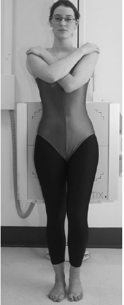

Pubis Symphysis
Centering point:Centre to the midline at the level of the symphysis pubis,
with the horizontal central ray perpendicular to the image
receptor.

Cassette Size:24cm x 30cm (12 x 10 ins)
Potrait
Exposure Factors:70kVp on
20MaS
FFD:100cm
Bucky/Grid:Moving or Stationary Grid
Filter:No
Collimation:Collimate to four sides of interest
Pathologies:Postpartum Widening
Position of patient and cassette
- The patient stands with the posterior aspect of the trunk
against the vertical Bucky.
- The arms are folded across the chest with the feet separated,
so that the patient can comfortably adopt a standing position
on one foot, and then the other.
- The anterior superior iliac spines should be equidistant from
the image receptor, with the median sagittal plane perpendicular
to the vertical central line of Bucky.
-
The vertical Bucky is adjusted so that the horizontal central
line is at the same level as the symphysis pubis.
- For the single projection a 24 x 30cm cassette is exposed
with the weight equally distributed on both feet.
- For the weight bearing projection, a 24 x 30cm cassette is
exposed, with the full weight of the body on one limb. A second
cassette is then exposed with the weight on the opposite limb.